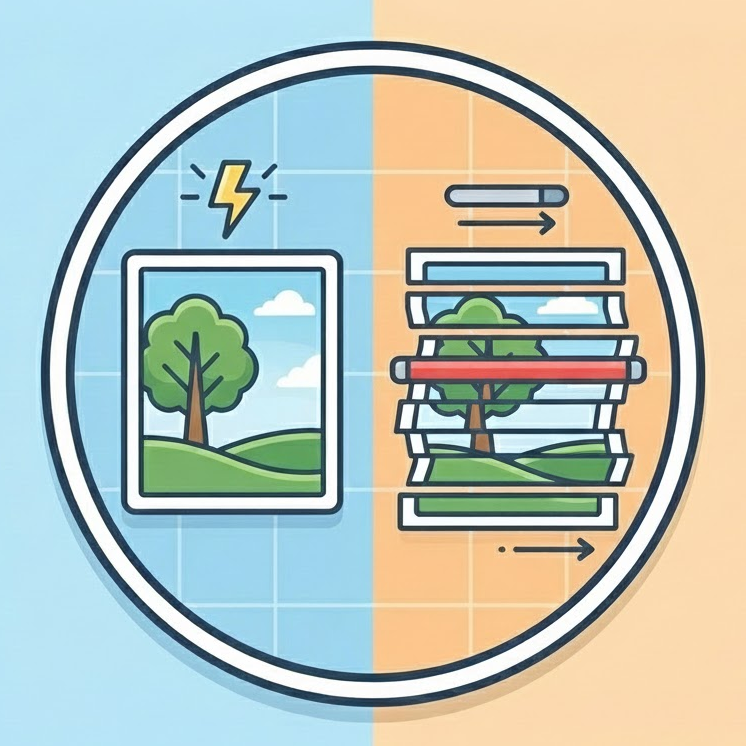
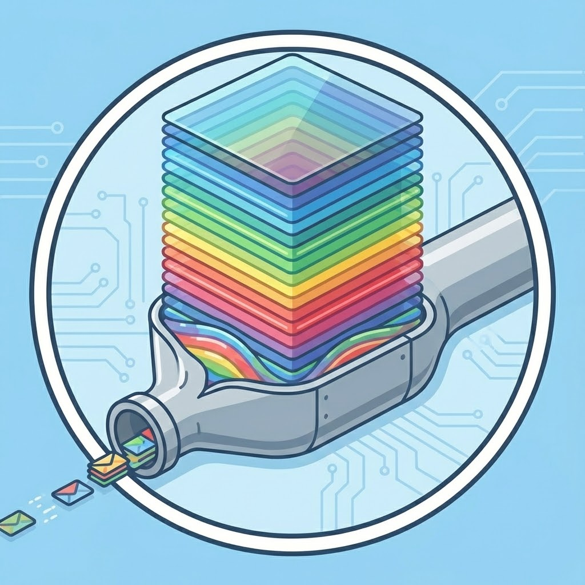

Barriers to Wider Adoption
The HSI Bottleneck & Engineering Constraints
While the utility of hyperspectral data is well-established in the laboratory, three fundamental engineering barriers have prevented its widespread adoption in deployed environments. These barriers are Cost, Mechanics, and Data.
1. The Optical Complexity Barrier (Cost)
Traditional high-performance hyperspectral cameras (such as Offner or Dyson spectrometers) rely on complex optical trains.
- Components: These systems require precision slits, collimating mirrors, diffraction gratings, and re-focusing optics.
- Alignment: The optical path requires sub-micron alignment stability across a wide temperature range.
- Consequence: This complexity drives high unit costs ($20k–$150k USD) and makes miniaturization extremely difficult. It effectively limits HSI to high-budget research labs or military assets.
Lumos Solution: We replace the entire optical train with a single, wafer-level diffractive chip. By leveraging semiconductor manufacturing techniques (Nano-Imprint Lithography), we drive the cost structure down to a level compatible with mass-market sensors.
2. The Acquisition Constraint (Mechanics)
 The dominant architecture for high-resolution HSI is the Push-broom (Line-scan) sensor.
- Mechanism: The sensor captures one spatial line (\(\lambda-x\)) at a time. To build a 2D image (\(x, y, \lambda\)), the sensor must move relative to the scene (or vice versa) in a perfectly linear fashion.
- Failure Modes:
- Vibration: Any unmodeled vibration (e.g., from a drone or vehicle) results in “wobbly” images that are geometrically distorted.
- Dynamic Scenes: If objects in the scene move during the scan, they become sheared or artifacted.
- Consequence: Push-broom sensors are notoriously difficult to deploy on UAVs, handheld devices, or in dynamic industrial settings.
Lumos Solution: We utilize a Snapshot architecture. We capture the full spatial-spectral volume \((x, y, \lambda)\) in a single integration period. This makes the system immune to vibration and motion artifacts, treating spectral video just like standard video.
3. The Dimensionality Curse (Data)
 One understated barrier to widespread spectral adoption is the massive size of hyperpectral volumes. An uncompressed image array must be stored and processed for every spectral band.
For a standard \(512 \times 512\) pixel sensor, the uncompressed data requirements vary drastically:
| Architecture | Channels | Bit Depth | Frame Size | 1000-Frame Video |
|---|---|---|---|---|
| Standard RGB | 3 | 8-bit | 0.75 MB | 0.75 GB |
| Common HSI | 25 | 16-bit | 12.5 MB | 12.5 GB |
| High-Res HSI | 120 | 16-bit | 60.0 MB | 60.0 GB |
| Lumos Diffractogram | 1 | 12-bit | 0.50 MB | 0.50 GB |
Consequences:
- Satellite Downlinks: An earth-observation satellite creates terabytes of data. Downlinking this via limited radio bandwidth is prohibitively expensive or slow. Operators often discard 90% of the data. Ironically, analysts sometimes discard a lot of these data which is unnecessary for some applications since they’re only interested in a few wavelengths, or end up combining them to an end product that is much smaller than the original datasets. Spectral data cubes are not only huge, but information is encoded very redundantly in them, making it inefficient!
- Drone Telemetry: A UAV many not be able transmit live spectral video to a ground station because the bitrate can easily exceed standard wireless protocols.
- Edge Compute: Embedded processors cannot reconstruct and analyze heavy 3D data cubes in real-time (60 FPS).
- Archival: Storing petabytes of raw hyperspectral cubes for historical analysis is very expensive.
Lumos Solution: Analog Optical Compression. Instead of digitizing redundant data, our optics compress the signal before it hits the sensor. The Lumos Diffractogram is a 2D grayscale image (~1.3 MB) that encodes the full spectral context. This represents a ~50x reduction in raw data volume, enabling efficient transmission from space, cloud archival, and real-time processing.